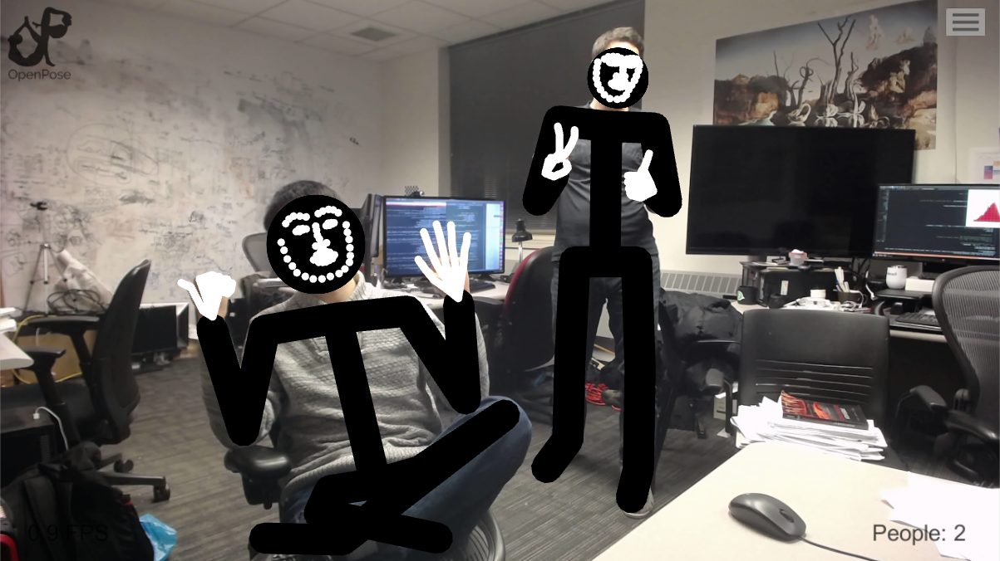
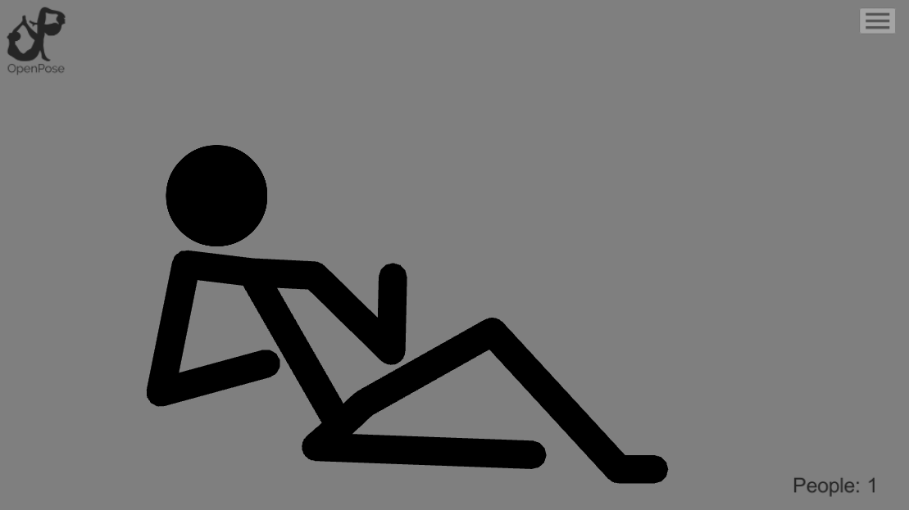
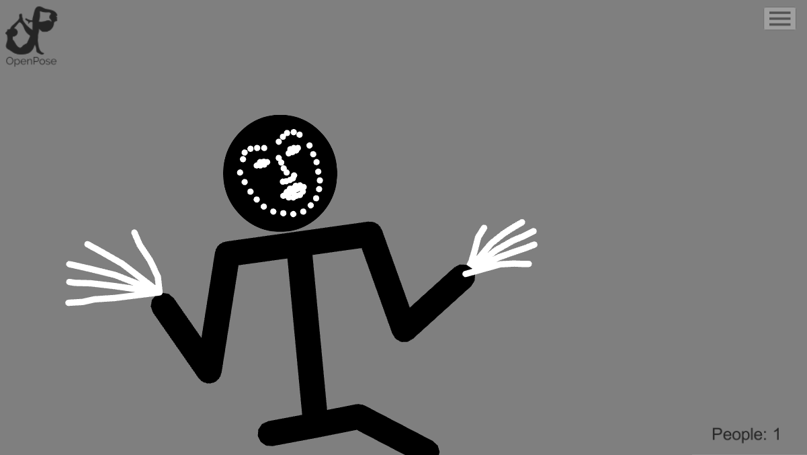
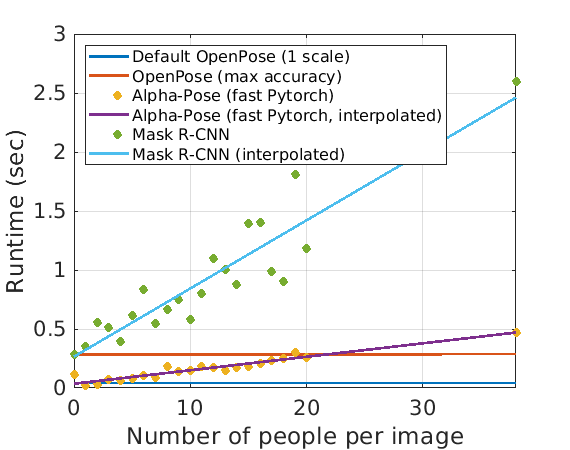

|
OpenPose
1.7.0
The first real-time multi-person system to jointly detect human body, hand, facial, and foot keypoints
|
|
OpenPose
1.7.0
The first real-time multi-person system to jointly detect human body, hand, facial, and foot keypoints
|
| Build Type | Linux | MacOS | Windows |
|---|---|---|---|
| Build Status |
OpenPose has represented the first real-time multi-person system to jointly detect human body, hand, facial, and foot keypoints (in total 135 keypoints) on single images.
It is authored by Ginés Hidalgo, Zhe Cao, Tomas Simon, Shih-En Wei, Yaadhav Raaj, Hanbyul Joo, and Yaser Sheikh. It is maintained by Ginés Hidalgo and Yaadhav Raaj. OpenPose would not be possible without the CMU Panoptic Studio dataset. We would also like to thank all the people who have helped OpenPose in any way.

Authors Ginés Hidalgo (left) and Hanbyul Joo (right) in front of the CMU Panoptic Studio


Testing OpenPose: (Left) Crazy Uptown Funk flashmob in Sydney video sequence. (Center and right) Authors Ginés Hidalgo and Tomas Simon testing face and hands

Tianyi Zhao testing the OpenPose 3D Module
  
Tianyi Zhao and Ginés Hidalgo testing the OpenPose Unity Plugin
We show an inference time comparison between the 3 available pose estimation libraries (same hardware and conditions): OpenPose, Alpha-Pose (fast Pytorch version), and Mask R-CNN. The OpenPose runtime is constant, while the runtime of Alpha-Pose and Mask R-CNN grow linearly with the number of people. More details here.

Main Functionality:
Input: Image, video, webcam, Flir/Point Grey, IP camera, and support to add your own custom input source (e.g., depth camera).
Output: Basic image + keypoint display/saving (PNG, JPG, AVI, ...), keypoint saving (JSON, XML, YML, ...), keypoints as array class, and support to add your own custom output code (e.g., some fancy UI).
OS: Ubuntu (20, 18, 16, 14), Windows (10, 8), Mac OSX, Nvidia TX2.
Hardware compatibility: CUDA (Nvidia GPU), OpenCL (AMD GPU), and non-GPU (CPU-only) versions.
Usage Alternatives:
For further details, check the major released features and release notes docs.
If you want to use OpenPose without installing or writing any code, simply download and use the latest Windows portable version of OpenPose!
Otherwise, you could build OpenPose from source. See the installation doc for all the alternatives.
Simply use the OpenPose Demo from your favorite command-line tool (e.g., Windows PowerShell or Ubuntu Terminal). E.g., this example runs OpenPose on your webcam and displays the body keypoints:
You can also add any of the available flags in any order. E.g., the following example runs on a video (--video {PATH}), enables face (--face) and hands (--hand), and saves the output keypoints on JSON files on disk (--write_json {PATH}).
Optionally, you can also extend OpenPose's functionality from its Python and C++ APIs. After installing OpenPose, check its official doc for a quick overview of all the alternatives and tutorials.
Our library is open source for research purposes, and we want to improve it! So let us know (create a new GitHub issue or pull request, email us, etc.) if you...
Please cite these papers in your publications if OpenPose helps your research. All of OpenPose is based on OpenPose: Realtime Multi-Person 2D Pose Estimation using Part Affinity Fields, while the hand and face detectors also use Hand Keypoint Detection in Single Images using Multiview Bootstrapping (the face detector was trained using the same procedure as the hand detector).
@article{8765346,
author = {Z. {Cao} and G. {Hidalgo Martinez} and T. {Simon} and S. {Wei} and Y. A. {Sheikh}},
journal = {IEEE Transactions on Pattern Analysis and Machine Intelligence},
title = {OpenPose: Realtime Multi-Person 2D Pose Estimation using Part Affinity Fields},
year = {2019}
}
@inproceedings{simon2017hand,
author = {Tomas Simon and Hanbyul Joo and Iain Matthews and Yaser Sheikh},
booktitle = {CVPR},
title = {Hand Keypoint Detection in Single Images using Multiview Bootstrapping},
year = {2017}
}
@inproceedings{cao2017realtime,
author = {Zhe Cao and Tomas Simon and Shih-En Wei and Yaser Sheikh},
booktitle = {CVPR},
title = {Realtime Multi-Person 2D Pose Estimation using Part Affinity Fields},
year = {2017}
}
@inproceedings{wei2016cpm,
author = {Shih-En Wei and Varun Ramakrishna and Takeo Kanade and Yaser Sheikh},
booktitle = {CVPR},
title = {Convolutional pose machines},
year = {2016}
}
Paper links:
OpenPose is freely available for free non-commercial use, and may be redistributed under these conditions. Please, see the license for further details. Interested in a commercial license? Check this FlintBox link. For commercial queries, use the Contact section from the FlintBox link and also send a copy of that message to Yaser Sheikh.